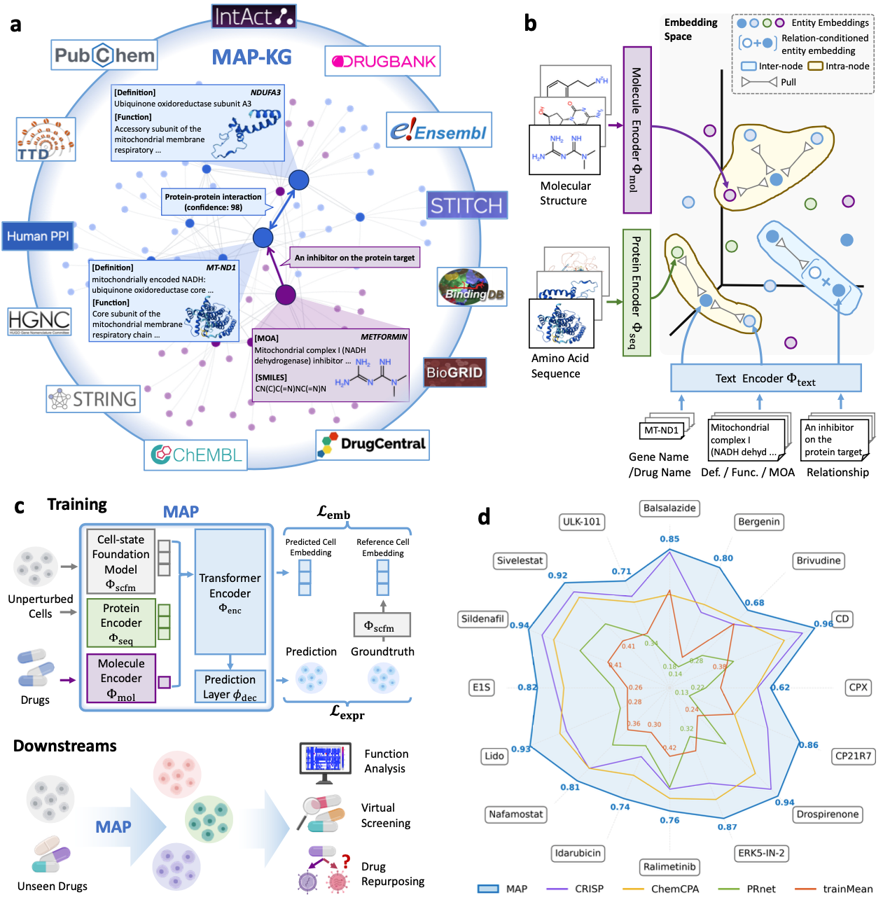
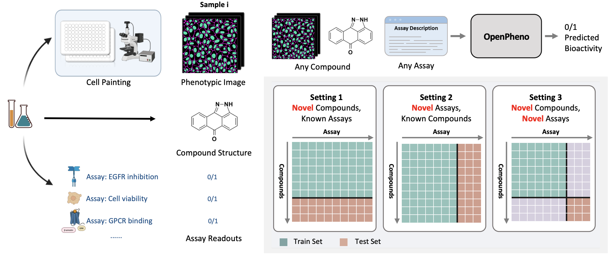
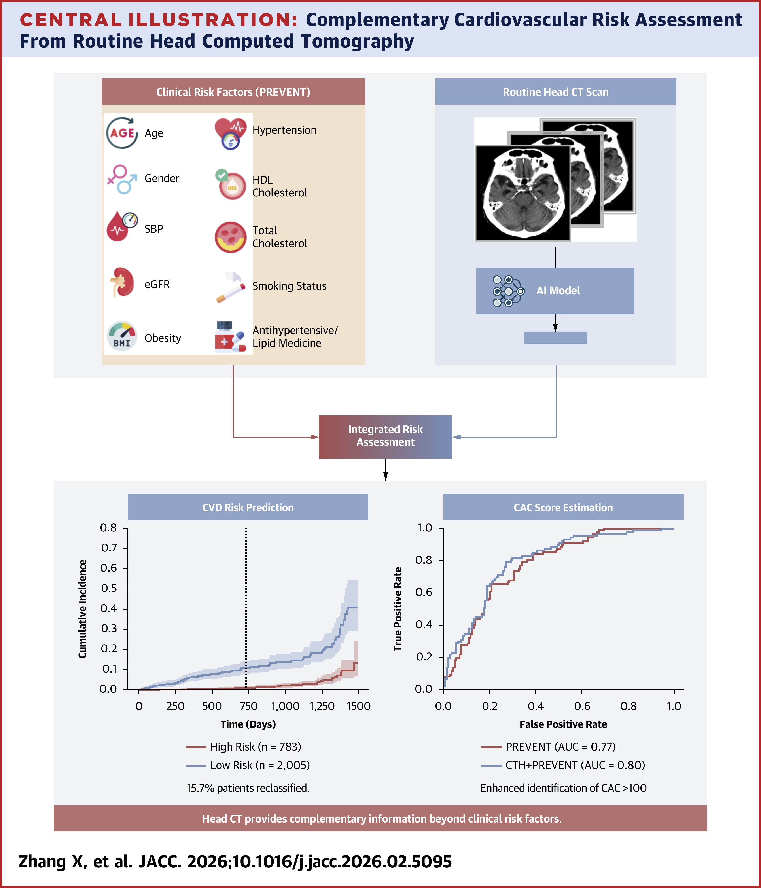
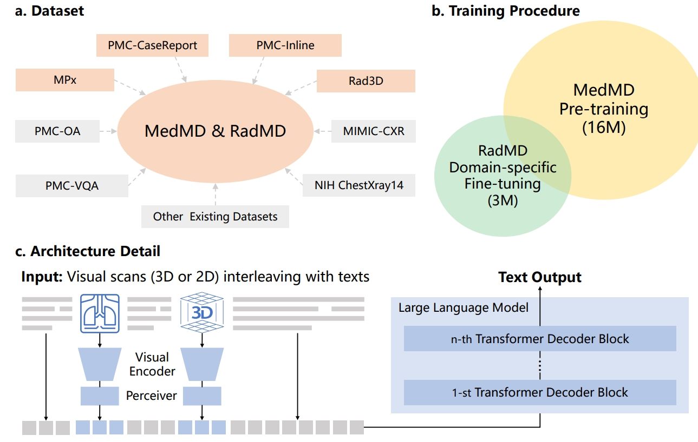

|
Hi, I am a postdoctoral fellow at Harvard University in the Department of Biomedical Informatics, working with Prof. Pranav Rajpurkar. I will join Shanghai Jiao Tong University as an Associate Professor in July 2026. Previously, I completed my Ph.D. at Shanghai Jiao Tong University and my B.S. from the School for the Gifted Young, University of Science and Technology of China. I am interested in building predictive AI models of the cell — closed-loop with simulation and experiment — to accelerate the discovery of new medicines and narrow the gap between biology and patient impact. I am currently recruiting PhD students for 2027. If you are interested, please see this page. Google Scholar / Github / LinkedIn / Twitter |
{kind=link}
Recent News
Congratulations to all co-authors on the following acceptances, and thank you for the excellent teamwork!
[04/2026] 1 paper has been accepted by CHIL 2026.
[04/2026] 1 paper has been accepted by JACC.
[03/2026] 1 paper has been accepted by Nature Medicine.
[03/2026] 1 paper has been accepted by MIDL 2026(Oral).
[02/2026] 1 paper has been accepted by Nature.
[12/2025] 1 paper has been accepted by JBHI.
[12/2025] 1 paper has been accepted by NEJM AI.
[11/2025] 1 paper has been accepted by Machine Learning for Health (ML4H) 2025.
[09/2025] 1 paper has been accepted by Radiology.
[09/2025] 3 papers have been accepted by Pacific Symposium on Biocomputing (PSB) 2026.
[09/2025] 2 abstracts have been accepted by 2025 RSNA Cutting-Edge Research Abstracts.
[09/2025] 1 paper has been accepted by Nature Scientific Data.
[08/2025] 1 paper has been accepted by npj Digital Medicine.
[06/2025] ReXVQA, a large-scale, high quality question answering benchmark for chest X-rays, is released.
[06/2025] 1 paper has been accepted by Nature Communications.
[05/2025] ReXGradient-160K, the largest Chest X-ray report generation dataset in terms of patient number, is released.
[04/2025] 2 papers have been accepted by CHIL 2025.
 Datasets & Benchmarks
Datasets & Benchmarks
ReX-MLE: A medical ML benchmark for evaluating automated AI agents on realistic medical imaging tasks. ReXGradient-160K: A large-scale publicly available dataset of chest radiographs with free-text reports 3DReasonKnee: A 3D Reasoning Benchmark for Knee MRI ReXGroundingCT: A 3D Chest CT Dataset for Segmentation of Findings from Free-Text Reports ReXRank: A Public Leaderboard for AI-Powered Radiology Report Generations RadGenome-ChestCT: A grounded vision-language dataset for chest CT analysis PMC-VQA: A large-scale, high quality question answering benchmark for chest X-rays
Selected Research
See the full publication list for all papers.
|
 |
MAP: A Knowledge-driven Framework for Predicting Single-cell Responses for Unprofiled Drugs Preprint, 2026
Most existing models for predicting drug-induced single-cell responses fail to generalize beyond their training compound set, limiting in-silico screening to a narrow chemical space. MAP introduces a knowledge-driven framework that grounds predictions in molecular structure and biological pathway priors, enabling transcriptomic response prediction for drugs never seen during training. This opens the door to systematic in-silico screening across novel chemical libraries — a key step toward predictive, simulation-driven drug discovery.
|
|
 |
Phenotypic Bioactivity Prediction as Open-set Biological Assay Querying Preprint, 2026
Phenotypic compound profiling is fundamentally open-ended: each new biological assay defines a new target space that models trained on fixed assay panels cannot handle. We reformulate phenotypic bioactivity prediction as an open-set retrieval problem in which assays themselves are treated as queryable entities. The resulting framework generalizes to unseen targets and assays, enabling scalable, hypothesis-free compound profiling at the scale needed for real-world screening campaigns.
|
|
 |
Opportunistic Cardiovascular Risk Assessment Using Routine Head CT in the Emergency Department JACC, 2026
Cardiovascular risk is often discovered only after an acute event, even though millions of emergency-department patients receive head CTs each year for unrelated reasons. We show that these routine, "opportunistic" head CTs contain rich vascular calcification signals that AI can extract to stratify long-term cardiovascular risk. This enables early identification of high-risk patients — and personalized prevention — without any additional imaging, radiation, or cost to the patient.
|
|
 |
Towards Generalist Foundation Model for Radiology by Leveraging Web-scale 2D & 3D Medical Data Nature Communications, 2025
Despite the success of foundation models in general vision and language, radiology has remained fragmented across modality- and task-specific systems. We introduce RadFM, a generalist radiology foundation model trained on web-scale 2D and 3D medical data spanning X-ray, CT, and MRI. A single unified architecture handles diverse tasks — VQA, report generation, diagnosis, and visual grounding — across modalities, taking a step toward generalist medical AI that scales with data rather than task-specific engineering.
|
|
Based on a template by Jon Barron.
|